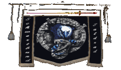
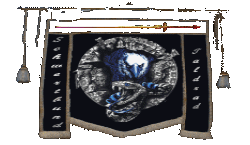

|

|
Das schwarze Brett
|
|
| Übersicht,
Anschläge und Stammtisch (RPG) |
|
KRIEG (15  ) )
|
| Agrippa de Arsakes (RIP) |
Mich betrübt wie ein Jammerlappen so viel Müll verzapft, und das er nicht merkt, wie man ihn verhöhnt *hämisch grins*
Aber wie heisst es so schön, der Apfel fällt nicht weit vom Stamm? *grinst erneut*
Aber eins könntet Ihr schaffen, hier den Rekort der Anhänge zu machen! Das ist doch immerhin etwas, sollte euch doch reichen, eigentlich mehr als Ihr verdient!
*Mal wieder lachend das Brett verlässt*
Agrippa Selachii,
Kardinälin im Dienste des einzig wahren Glaubens an Pheron,
Ehefrau des ehrenwerten Sam Selachii
Zur 23. Stunde am 80.Saatmond im Jahre 430 |
21.08.07 21:39
|
|
Ninniach Lhuthien
  |
*Kommt am Anschlagbrett vorbei und staunt über die vielen Leute. Bleibt eine Weile stehen und hört den Rednern zu. Schüttelt dann traurig den Kopf und denkt: Und wieder wird die Haß- und Gewaltspirale ein Stückchen höher gedreht. Geht dann mit gesenktem Kopf weiter.*
Lady Ninniach Lhuthien,
Vorsteherin von Schmauchingen,
Anführerin der glorreichen Nation "Nûr nui Ninniach"
Zur 24. Stunde am 81.Saatmond im Jahre 430 |
21.08.07 21:59
|
|
Holgrîm
  |
*kommt vorbei, nimmt sich einen großen Krug Rum und etwas von dem zu knabbern und legt sich in den freien Liegestuhl neben Ardán und Laurelin um dann das Spiel in Ruhe betrachten zu können*
Pfalzgraf HolliMandela,
Vorsteher von Erathia,
Konsul der Republik der Stille
Zur 2. Stunde am 81.Saatmond im Jahre 430 |
21.08.07 22:19
|
|
| Nalon din Adun (RIP) |
Ohne mich in dieses... was auch immer... einzumischen, ist es nur in Bezug auf den Hain und seine Feinde Usus, die Lehnsketten rauf und runter anzugreifen, auf der ganzen Scherbe hat diese Unsitte glücklicherweise noch nicht Einzug gefunden und wer damit angefangen hat... daran scheiden sich die Geister und letztlich ist es egal, denn keiner wird sich finden, der damit aufhört oder doch?
Herzog Nalon din Adun,
Vorsteher von Trucan,
Anführer der glorreichen Nation "Atha´an Miere",
Ehemann der reizenden Mayandra la Vega,
Herr der Wogen der Atha´an Miere
Zur 7. Stunde am 81.Saatmond im Jahre 430 |
21.08.07 23:32
|
|
Bhaal
  |
jaja wer solche Feinde hat braucht keine Freunde mehr *lacht herzhaft*
Pfalzgraf Bhaal,
Vorsteher von Apricus Lacus,
Nachtschatten
Zur 8. Stunde am 81.Saatmond im Jahre 430 |
21.08.07 23:49
|
|
Turiandor Dragus
  |
Na Bhaal, soll ich dich auch mal so blamieren? *stimmt in sein Lachen ein, bevor er sich zu Ardan setzt*
Hier den Kuchen habe ich von Galaton mitgebracht.
Pfalzgraf Turiandor Dragus,
Vorsteher von Stullenberg,
Ehemann der reizenden Viviane Dragus,
Schwertmeister der Vertex
Zur 10. Stunde am 81.Saatmond im Jahre 430 |
22.08.07 0:16
|
|
| Biba Butzemann (RIP) |
*gäääääähhhhhnnnnnn* is mal wiedeer irgendwo nen sack getreide umgefallen oder warum is hier so ein aufstand?
Baron Thor von Asgard,
Vorsteher von UrkS diFugL aka UmF d FuduraB
Zur 13. Stunde am 81.Saatmond im Jahre 430 |
22.08.07 0:50
|
|
| Mageta der Löwe (RIP) |
Nalon, Raziel ist ein ausgewiesenes Glied in der Lehnskette eines Feindes (in dem Fall Oki ad Argos). Als solches ist er seinem Lehnherren verpflichtet und als solches vertritt er im großen und ganzen dessen Meinung.
Da dieser Lehnsherr ein Feind des Hainbundes ist muss Raziel leider damit rechnen, dass er Ziel von Angriffen des Hains werden kann. Deswegen wurde ihm auch der Krieg ausgesprochen.
Außerdem ist er Führer der Nation Lionhearts. Da er in dieser Position seine Nation politisch vertritt, ist auch diese seiner Entscheidung unterworfen, ein Lehe eines Feindes zu sein.
Was ist daran so schwer zu verstehen?
Freiherr Mageta der Löwe,
Vorsteher von Dîn Ithil
Zur 14. Stunde am 81.Saatmond im Jahre 430 |
22.08.07 1:13
|
|
| Nathan von Xanthias (RIP) |
hmnmmm ich glaube es liegt daran das ehr nur mal wieder wollte das sich alle zu wort melden, nicht wie in allen tausend Beiträgen nur fünf Personen und dann keiner mehr.
Sonst ist es einfach nur langweilig zu sehen wie sich alle einig sind das dieser möchte gern Razel einfach es nicht auf die reihe bekommt, uns alle in ruhe zu lassen mit seinen kommentaren.
ich glaube Thor hat es am besten von uns allen ausgedrückt.
also weiter geht es mit dem fröhlichen Schlachten, auf das weiter sinnlos Blut ins Meer fließen sollen um somit die wahren Feinde der Völker der Scherbe zu stärken.
Nathan von Xanthias,
Ehemann der reizenden Inis Vitrin von Xanthias
Zur 16. Stunde am 81.Saatmond im Jahre 430 |
22.08.07 1:34
|
|
| Elwyn Nachtrose (RIP) |
Was für eine Schande....
Elwyn Nachtrose
Zur 16. Stunde am 81.Saatmond im Jahre 430 |
22.08.07 1:36
|
|
| Farodin (RIP) |
ja wirklich, denn ich muss zugeben mit Herzog Nalon mal einer Meinung zu sein.....ich scheine alt zu werden. *wartet schmunzelnd darauf, wieviele Kriegserklärungen ob dieser Worte ins Haus flattern*
Baron Shakaar,
Vorsteher von Clouds End
Zur 3. Stunde am 82.Saatmond im Jahre 430 |
22.08.07 4:05
|
|
| Nalon din Adun (RIP) |
Werter Mageta, natürlich kenne ich diese "Logik". Aber weder ist sie seit Anbeginn der Scherbe in Gebrauch, noch auf der ganzen Scherbe. Allerdings gebe ich zu, ist es schwer, über den Horizont des Hains hinaus zu blicken, klein ist er ja nicht gerade.
Herzog Nalon din Adun,
Vorsteher von Trucan,
Anführer der glorreichen Nation "Atha´an Miere",
Ehemann der reizenden Mayandra la Vega,
Herr der Wogen der Atha´an Miere
Zur 17. Stunde am 82.Saatmond im Jahre 430 |
22.08.07 7:21
|
|
| Ardán Schwarzauge (RIP) |
Diese Logik ist dem Hain seinerzeit durch die Kaperfahrer und namentlich Brendan aufgedrängt worden. Insofern ist es nur logisch, diese Logik zu übernehmen. Aber zu dieser Zeit war Euer Horizont wahrscheinlich zu begrenzt, als daß Ihr Euch daran erinnern könntet.
Pfalzgraf Ardán Fálmanôr, der Deichgraf,
Vorsteher von Dîn Nerôná,
Anführer der glorreichen Nation "Republik der Stille",
Verlobter der reizenden Dagorineth,
Hochkonsul der Republik der Stille
Zur 18. Stunde am 82.Saatmond im Jahre 430 |
22.08.07 7:36
|
|
| Nalon din Adun (RIP) |
Wie ich sagte, wer sie wem aufgedrängt hat, daran scheiden sich die Geister und es ist letztlich eine uninteressante Frage.
Die interessante Frage wäre eher, wer durchbricht den Kreislauf?
Und die Grenzen meines Horizontes lasst ruhig meine Sorge sein.
Herzog Nalon din Adun,
Vorsteher von Trucan,
Anführer der glorreichen Nation "Atha´an Miere",
Ehemann der reizenden Mayandra la Vega,
Herr der Wogen der Atha´an Miere
Zur 23. Stunde am 82.Saatmond im Jahre 430 |
22.08.07 8:57
|
|
| Aiko Meivra (RIP) |
Hallo zusammen !
Ich würde mal gerne wissen welche der großen denn diesen Krieg führt!
Ich meine damit nicht die Leute unter diesen in der Lehnskette!
Sondern welche Blöcke sich seit Ewigkeiten wie es scheint die Köpfe einschlagen ?
Und dann würde mich mal interessieren ob ihr euch nicht entweder:
1. Friedlich mal einigen könnt!
2. Euch ein Datum aussucht so in einem Jahr z.B. und euch dann richtig auf denn Kopf haut und dann so wie es ist an diesem Tage mit denn Grenzen einen Frieden schließt?
3. Wie wäre es mal wenn wann verdeutlichen würde warum wann Krieg führt! Denn so richtig ernst scheint der Krieg ja nicht zu sein so wie ich das sehe! Denn gestern auf der Hafen Feier konnte wann sich ja auch zum teil treffen ohne zu denn Waffen zu greifen! Geschweige denn das der Handel und alles ja scheinbar immer noch läuft und ein jeder denn anderen Belauert!
Aiko Meivra
Zur 1. Stunde am 83.Saatmond im Jahre 430 |
22.08.07 9:19
|
|
Imperius Taldrad
   |
Du unterschätzt die feinen Strukturen der Politik.
Manche Dinge kann man offen sagen andere nicht.
Manche Leute können nie vergessen, andere schon.
Manchen Leuten braucht man oder sie brauchen einen.
Manche Leute mag man und will sie nicht verletzen, andere mag man nicht.....
Das Wesen an sich ist nicht perfekt, somit sein Erschaffenes, speziell wenn es um Politik geht, auch nicht.
Das Probabilistische Konzept der Wissenschaften bietet uns wenigstens die Möglichkeit zu sagen das wir versuchen zu lernen.
*die Stirn runzelt*
..oder auch nicht.
Graf Imperius Taldrad,
Vorsteher von Taldrad,
Familienoberhaupt der Taldrads
Zur 6. Stunde am 83.Saatmond im Jahre 430 |
22.08.07 10:25
|
|
| Aiko Meivra (RIP) |
Nun natürlich ist mir klar dass bei so etwas Gefühle im Spiel sind! Aber es geht ja auch um was Ernstes um Krieg!!!
Da sollte doch eigentlich jeder der mitmacht wissen wieso er da mit macht und warum er das Macht und das sollte eigentlich auch jeder öffentlich sagen können, denn der krieg wird ja auch öffentlich ausgesprochen!
Aber jetzt mal zum Thema zurück :
So wie ich das verstanden habe!
Die Nation Laoch d´Orchadas haben der Nation "Lionhearts" denn Krieg erklärt weil die "Lionhearts" in der Lehnskette von einem Feind ist also von der Nation Argos Legion unter der Leitung von Graf Oki ad Argos.
Jetzt würde ich gerne wissen von denn Laoch d´Orchadas :
Würde die Nation Laoch d´Orchadas denn Krieg zurücknehmen wenn folgendes erreicht werden könnte?
Wenn wann einen Nichtangriffspakt zwischen Laoch d´Orchadas und "Lionhearts" schließen würde, mit der Auflage nicht absichtlich Feinde beiden Nationen zu unterstützen im krieg! Und jeder bleibt in seiner Lehnskette so wie es ist!
Aiko Meivra
Zur 9. Stunde am 83.Saatmond im Jahre 430 |
22.08.07 11:17
|
|
| Agrippa de Arsakes (RIP) |
*Am Anschlag vorbei kommt, Aiko`s Nachricht sieht, liest, und lauthals Lachen muss*
Werte Aiko,
Ich glaube das war der Witz des Tages, oder vllt sogar des Jahres.
Ihr solltet euch mal erkundigen um was es dabei geht, wenn es so einfach wäre, würde hier Friede freude Eierkuchen sein.
Ich glaub Ihr gebt euch zuviel mühe um ein Thema das ein wenig Komplizierter ist, als wie Ihr das seht. Eure bemühungen in alen ehren, aber ich denke es wird nicht ans gewünschte ziel kommen.
*Lächelnd das Brett verlässt*
Agrippa Selachii,
Kardinälin im Dienste des einzig wahren Glaubens an Pheron,
Ehefrau des ehrenwerten Sam Selachii
Zur 10. Stunde am 83.Saatmond im Jahre 430 |
22.08.07 11:29
|
|
Zadar
 |
Wie der König sagte ist der Status der Lionhearts für uns als Feindeslehen nicht hinnehmbar.
Pfalzgraf Zadar,
Vorsteher von Xorlosch,
Moladh do Taoch Istigh
Zur 10. Stunde am 83.Saatmond im Jahre 430 |
22.08.07 11:30
|
|
| Titania Greenleafxxx (RIP) |
Eigentlich stellt sich mir nur die Frage weshalb der arme Tropf, der eigentlich eher bemitleidet werden sollte, mehr Aufmerksamkeit erhält als wirklich wichtige und ehrenhafte Feinde des Haines.
Ich muss doch die Herrschaften aus den Reihen des Königs wirklich sehr bitten! Sowas ist respektlos gegenüber unseren wahren Feinden.
Ansonsten bin ich mir sicher das sich baldigst der Konvent Makis mit dem Herren auseinandersetzen wird, da er immerhin vertragsbrüchig geworden ist durch seinen Lehenswechsel.
Das er seine Stadt behalten darf dürfte auch nur dem sonnigen Gemüt des Herzoges von Alirion zu verdanken sein.
Fürstin Titania Greenleaf,
Vorsteherin von Küstenbrise,
Moladh an Ealain do Caint
Zur 15. Stunde am 83.Saatmond im Jahre 430 |
22.08.07 12:41
|
|
| Aiko Meivra (RIP) |
Werter Zadar!
Danke für denn Hinweis!
Und vorweg ist es natürlich Sache der Nation Laoch d´Orchadas wem Sie denn Krieg erklären!
Aber doch ist es für mich etwas komisch denn:
So wie ich es bis jetzt verstanden habe ist der Lehnsaid nicht mit einer Kriegserklärung gleich zusetzen!
Mir versicherte in der Zwischenzeit auch das Sir Raziel das er in dem Lehnsaid abgelegt hat weil er von seinen Lehnsherren unterstützt wird mit Rat und Tat so wie im allgemeinen auch die Lehnsherren Angelegenheit angesehen wird!
Somit ist es doch anders herum nicht Raziel unterstützt Oki ad Argos sondern es ist genau anders herum aus diesem Grund ist ja auch Raziel nicht der Lehnsherr!
Somit ist es doch für die Nation Laoch d´Orchadas ein Vorteil, denn ein Feind unterstützt einen Nationsleiter einen Friedlichen und unparteiischen Nation!
Somit hat dieser doch weniger Mittel für denn Krieg!
Durch die Kriegserklärung ist es doch jetzt so, das die unparteiische Nation Lionhearts zum Selbstschutz auf lange sicht in die Armee vom Feind der Nation Laoch d´Orchadas getrieben wird!
Womit aus meiner Sicht die Nation Laoch d´Orchadas sich selber einen neuen Feind schafft indem Sie ihm denn Krieg erklärt!
Denn ich habe bis jetzt es so verstanden das der Lehnsaid eine Hilfe nach unten in der Lehnskette ist und nicht nach oben! Besonders wenn wann sich die Mitglieder zahlen der beiden Nationen ansieht!
Aiko Meivra
Zur 16. Stunde am 83.Saatmond im Jahre 430 |
22.08.07 12:45
|
|
| Kage Hitomi (RIP) |
Der Lehenseid sagt aber auch aus, dass man seinem Herren zuspricht, ihn im Falle eines Kampfes zu unterstützen; im Gegenzug für die Hilfe, die er einem leistet.
Die feudale Bindung ist ein Zusammenschluß gegenseitiger Treue und Hilfe und kein einseitiger Akt.
Kage Hitomi,
Vorsteher von Dîn Aderthaîd,
Kardinal im Dienste des einzig wahren Glaubens an Tura,
Konsul der Republik der Stille,
Zweitplatzierter des 1. Goldbeutelschen Wettbewerbs
Zur 18. Stunde am 83.Saatmond im Jahre 430 |
22.08.07 13:12
|
|
| Aiko Meivra (RIP) |
Werte Kage Hitomi !
Wie kommt ihr da drauf?
Ich habe mich an die alten Schriften der Wichtel gehalten und da konnte ich dieses nicht finden. (http://scherbenwelten.de/help.php?SEARCH=lehn&id=70)
Woher nehmt ihr eurer wissen?
Und in diesem fall hat her ist das ja nicht so! Mir hat Sir Raziel versichert das dieses nicht sein bestreben ist!
Ich erlaube mir aus seinem Brief zu zitieren:
meine Lehenschaft zu Oki besteht lediglich weil ich eien Kredit in der Höhe von 15 MIO GS hatte
Ich muss euch aber recht geben das ein Lehenseid eine Bindung auf Grund von Vertrauen und Treue ist. Aber ich gebe doch zu bedenken das natürlich das nicht so ist das der Untergebende in denn Krieg zieht bloß weil der Lehnsheer ruft! Ein Krieg wird doch aufgrund von einer Sachlage geführt und nicht bloß aus Gewohnheit!
Wäre dem so hätte die Nation Lionhearts doch denn krieg ausgesprochen!
Des Weiteren wäre dieses so dann müsste es ja nur noch eine Hand voll Nationen geben und es wäre unnötig das es so viele Nationen auf der Scherbe gibt! Wenn alle Lehnsleute das machen was ihnen die Lehsherren sagen ohne selber darüber zu urteilen!
Aiko Meivra
Zur 20. Stunde am 83.Saatmond im Jahre 430 |
22.08.07 13:44
|
|
| Thorben von Sarkem (RIP) |
Wer einem Herrn/Herrin einen Lehnseid schwört, so ist dies kein einfacher Akt ohne Konsequenzen.
Es ist eine auf gegenseitig gebotene Unterstützung zweier Parteien, deren Zweck es ist, in einer Gemeinschaft zu funktionieren.
Begibt sich ein Nationsführer als Lehe in die Hand eines anderen Nationsführers, so wird er auch mit den Konsequenzen leben müssen, denn auch wenn keine aktive Kriegshilfe in Form von Kämpfern und Armeen gestellt wird, oder gar keine passive in Form von Gold und Gütern, so sorgt der Lehe doch dafür, das sein Lehnsherr indirekt davon profitiert, indem es ihm möglich ist, schneller und mehr Armeen auszuheben.
Somit stellt eine Lehnskette die Nationsübergreifend von statten geht eine indirekte Bedrohung dar, die alleine deshalb schon dafür ausreicht, das der Angreifer/Verteidiger, die Lehnskette die Nationsübergreifend stattfindet, mit einbezieht.
Was eine eigentlich recht logische Verbindung von Ursache und Wirkung ist.
Wenn sich somit der Lehe entscheidet ein derart großzügiges Angebot nicht anzunehmen und sei es nur für die Dauer des Konfliktes, damit er und seine Nation nicht in Mitleidenschaft gezogen werden, so muss er seine Entscheidung die er bewußt getroffen hat auch tragen und seinem Herrn zu Diensten sein, sei es gewollt oder nicht.
Thorben von Sarkem,
Vorsteher von Caras Korthre,
Priester im Dienste des einzig wahren Glaubens an Urvan
Zur 21. Stunde am 83.Saatmond im Jahre 430 |
22.08.07 14:01
|
|
| Constance Both (RIP) |
Was die Laoch d´Orchadas, namentlich Chefkönig Diestelflamme gemacht haben, kann man machen.
Warum? Weil man es sich leisten kann. Und wenn es tausendmal Erpressung genannt wird, na und?
Wenn die Nation "Alone" z.B. das gleiche verlangt hätte, hätter er sich doch tot gelacht.
(und wenn Herr Diestelflamme mit seinem Lehnsherrn Krieg hat, finde ich es legetim, zu versuchen, ihm auch den einen oder anderen Politikpunkt abzunehmen)
Lady Constance Both
Zur 21. Stunde am 83.Saatmond im Jahre 430 |
22.08.07 14:03
|
|
| Kage Hitomi (RIP) |
Aiko Meivra; in der Aufzeichnung, die Ihr mir sandtet, stand recht eindeutig, dass ein Lehe auch zur Verantwortung gezogen werden würde, wenn sein Lehensherr zu einem Plünderer würde und dass der Lehensherr schon alleine durch den politischen Einfluss profitiert.
Mit Verlaub, Eure Belege solltet Ihr besser auf Nutzen prüfen...
Desweiteren habt Ihr bis Dato permanent als Stellvertreter Raziel´s hier zum Besten gegeben, was er gesagt hat und was daher die unumstößliche Wahrheit sein muss; seid Ihr sein Kindermädchen?
Außerdem beziehe ich die Aussage, es beruhe auf einer Gegenseitigkeit, aus Erfahrung; denn nie habe ich etwas anderes erlebt, wenn nicht gerade eine der beiden Seiten ein Betrüger war und die andere Eides-Partei ausgenutzt hat.
Und weshalb man wegen einem Kredit einen Lehenseid schwört ist mir auch ein Rätsel.
((Ähm, mal ganz ehrlich... hierfür einen Hilfetext als Argument zu nehmen, der Anfängern ins Spiel hinein helfen soll und die ersten Wochen, ggf. Monate, in SW als Zielzeit nimmt ist irgendwie... platt.
http://de.wikipedia.org/wiki/Feudal
PENG!
Mein Thesenstützer.))
Kage Hitomi,
Vorsteher von Dîn Aderthaîd,
Kardinal im Dienste des einzig wahren Glaubens an Tura,
Konsul der Republik der Stille,
Zweitplatzierter des 1. Goldbeutelschen Wettbewerbs
Zur 24. Stunde am 83.Saatmond im Jahre 430 |
22.08.07 14:42
|
|
| Coran (RIP) |
Was für eine interessante Gesprächsrunde hier sich langsam versammelt hat und auch wenn wir uns alle schön im Kreis drehen wird erstaunlich wenig schlamm herrumgeworfen und es gibt erfreulich viele Lösungsansatzsversuche. Zumindest im Vergleich zu sonstigen Anschlägen dieser Art.
Werte Aiko Meivra, euer Vorschlag ist durchaus sinnvoll und er liegt so gesehen auch schon auf dem Tisch.
Sollte der Lehenseid und damit die Unterstützung gelöst werden bekommt er vermutlich seinen Frieden zurück. Denn der Lehenseid führt zu erhöhtem Prestige des Lehensherren, damit hat es dieser einfacher Soldaten zu rekrtieren und auf diese Art wird er unterstützt auch nur durch einen simplen Lehenseid. Das ist der Hintergrund für diese Drohgebärde, denn genau dieser Einfluss über Prestige soll dem jeweiligen Gegner genommen werden, ganz gleich auf welcher Seite der jeweils bedrohte steht.
Fassen wir die Sache doch einfach mal zusammen,
jemand wählte eine Seite und wird damit zum Feind für die andere Seite.
Er wird darüber informiert wie er den Feindschaftstatus loswerden kann, was wahlweise als Erpressung oder Chance gesehen werden kann.
Der bedrohte hat nun also die Wahl Treu zu seiner Wahl zu stehen, seinen Freunden den Rücken zu kehren und auf die Seite des Feindes zu wechseln oder sich neutral zu verhalten.
In allen Fällen hat er auch weiterhin ein schwieriges Dasein zu führen, vor allem nachdem er sich hier so zum Gespött der Massen machte.
Was gibt es dazu noch zu sagen ? Sachen wie diese passieren in allen Größen täglich auf Scherben.
Das Leben auf Scherben ist nie einfach, wer eine Wahl, welche auch immer, trifft muss mit Konsequenzen rechnen. Dagegen zu meckern hilft nicht beim tragen.
Coran
Zur 1. Stunde am 84.Saatmond im Jahre 430 |
22.08.07 14:52
|
|
| Aiko Meivra (RIP) |
Hmm...
Ok, das klingt logisch !
Ich danke allen für die Zeit mir das zu erklärungen !
Mit freundlichen Grüßen
Aiko Meivra
Zur 4. Stunde am 84.Saatmond im Jahre 430 |
22.08.07 15:35
|
|
Übersicht,
Anschläge und Stammtisch (RPG)
|
|
|
|